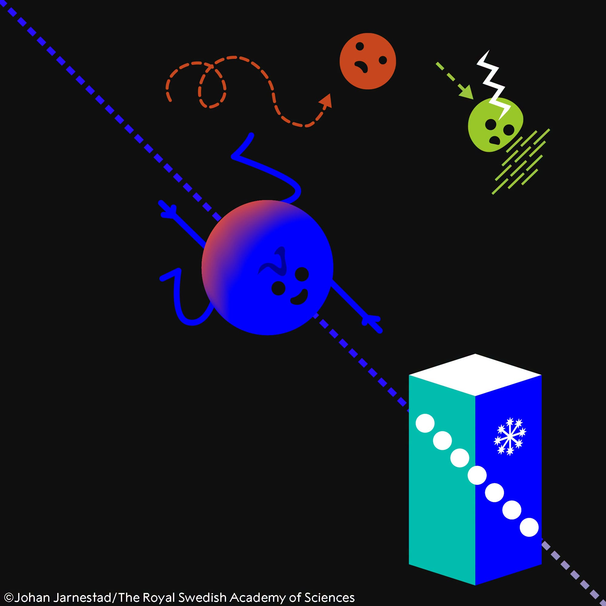
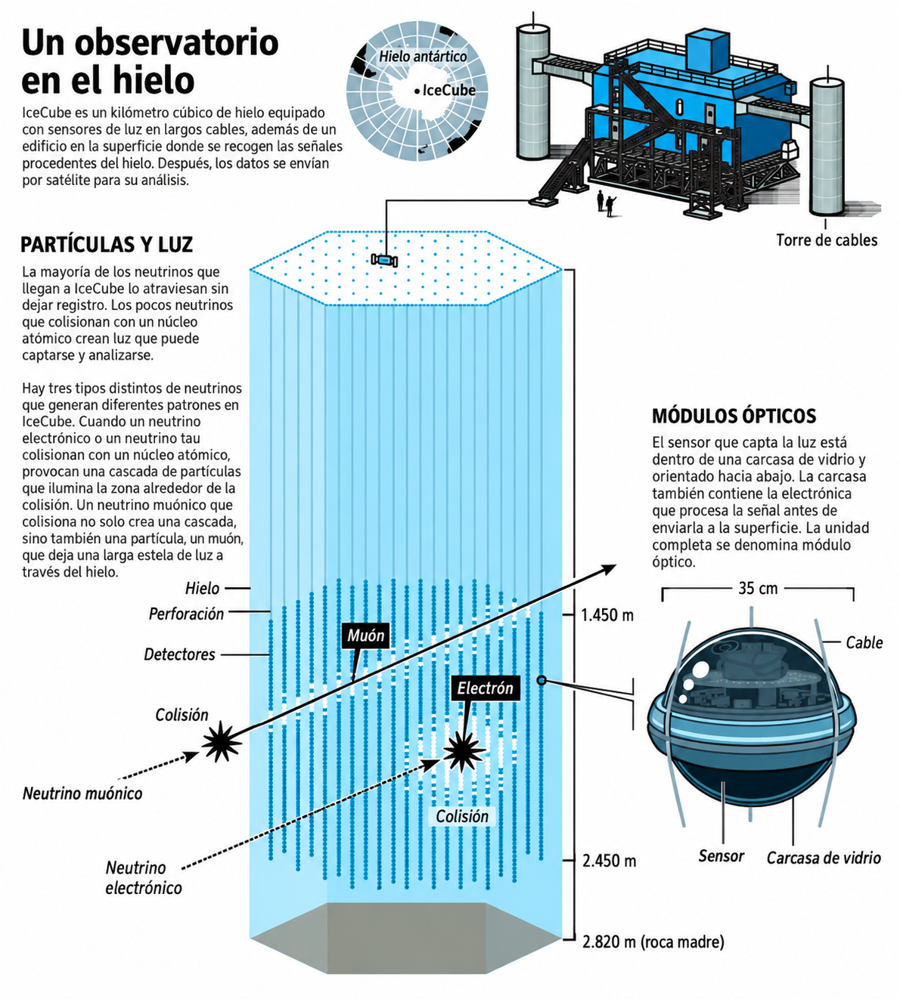

- Un mensajero casi invisible
- La solución: hacer el detector absurdamente grande
- Ver un neutrino sin ver el neutrino
- Veintiocho señales que no deberían estar allí
- Un neutrino apunta hacia un agujero negro
- Entonces, ¿qué premia exactamente el Nobel?
- Un telescopio que mira hacia todas partes
- Referencias
La forma habitual de mirar el Universo es esperar a que algo nos envíe luz. Puede ser luz visible, ondas de radio, infrarrojo, rayos X o rayos gamma, pero el principio es casi siempre el mismo, un objeto lejano emite fotones y nosotros construimos un telescopio para recogerlos.
El Premio Nobel de Física 2026 reconoce una idea mucho más extraña: observar el cosmos con partículas que pueden atravesar planetas enteros casi sin darse cuenta de que están ahí. El 6 de octubre de 2026, la Real Academia Sueca de Ciencias concedió el premio a Francis Halzen por sus contribuciones decisivas al observatorio IceCube y al descubrimiento de neutrinos de alta energía de origen astrofísico [1][2]. Para conseguirlo hubo que construir uno de los telescopios más peculiares de la historia: un kilómetro cúbico de hielo antártico lleno de sensores de luz.

Figura 1. Los neutrinos permiten observar regiones del Universo a las que otros mensajeros no siempre pueden acceder. Ilustración: © Johan Jarnestad/The Royal Swedish Academy of Sciences.
Un mensajero casi invisible
Los neutrinos son partículas elementales sin carga eléctrica y con una masa extremadamente pequeña. Interaccionan tan débilmente con la materia que alrededor de 100 billones de neutrinos atraviesan nuestro cuerpo cada segundo sin producir ningún efecto perceptible [3]. Esa indiferencia hacia la materia es una pesadilla si queremos detectarlos, pero es precisamente lo que los hace extraordinarios como mensajeros astronómicos.
Los fotones pueden ser absorbidos o dispersados por la materia que rodea una fuente. Los rayos cósmicos, protones y núcleos atómicos de altísima energía, tienen carga eléctrica, por lo que los campos magnéticos galácticos e intergalácticos van curvando sus trayectorias durante el viaje. Cuando uno de ellos llega a la Tierra, reconstruir el lugar exacto del que salió puede ser muy difícil.
Un neutrino de alta energía juega con otras reglas. Como no tiene carga eléctrica, los campos magnéticos no desvían apreciablemente su camino, y como interatúa muy poco puede escapar de entornos extremadamente densos. Si conseguimos detectar uno y reconstruir su dirección de llegada, obtenemos una pista casi directa hacia la región del cielo donde nació [1].
¿Por qué interesan tanto los neutrinos de alta energía?
Porque actúan como mensajeros de algunos de los aceleradores más extremos del Universo, capaces de impulsar partículas hasta energías inalcanzables para nuestros aceleradores terrestres.
Los grandes aceleradores cósmicos pueden encontrarse alrededor de agujeros negros, núcleos activos de galaxias, explosiones estelares y otros ambientes violentos. Allí, protones y núcleos acelerados pueden colisionar con gas o radiación. Esas interacciones producen partículas inestables, como los piones, cuyos decaimientos generan neutrinos. Detectar estos neutrinos nos permite estudiar indirectamente el motor que está acelerando las partículas [2]. Sin embargo, ¿cómo se detecta una partícula cuya principal característica es que casi nunca interacciona con nada?
La solución: hacer el detector absurdamente grande
Si una interacción es extremadamente improbable, una estrategia posible es aumentar brutalmente la cantidad de materia que vigilamos. Esta es la idea que llevó, tras décadas de desarrollo y el precedente del experimento AMANDA (Antarctic Muon And Neutrino Detector Array), al observatorio IceCube en el Polo Sur. En lugar de construir un recipiente gigantesco y llenarlo de algún material transparente, los investigadores aprovecharon algo que ya estaba allí, el hielo profundo de la Antártida [1][2].
IceCube instrumenta aproximadamente un kilómetro cúbico de hielo. En su configuración original se instalaron 5.160 módulos ópticos digitales, distribuidos en 86 cables verticales, los llamados strings, entre unos 1.450 y 2.450 metros de profundidad [3].
Para colocar los sensores fue necesario perforar el hielo con agua caliente y bajar cada cadena de detectores antes de que el agujero volviera a congelarse. Una vez allí, los módulos quedaron atrapados permanentemente en el glaciar. Y aquí aparece uno de los detalles más interesantes: IceCube no ve directamente el neutrino, espera a que ocurra algo muchísimo menos frecuente.

Figura 2. IceCube utiliza aproximadamente un kilómetro cúbico de hielo antártico como volumen detector. Miles de sensores ópticos permanecen congelados a profundidades que llegan hasta unos 2,5 kilómetros. Ilustración: © Johan Jarnestad/The Royal Swedish Academy of Sciences.
Ver un neutrino sin ver el neutrino
De vez en cuando, un neutrino choca con un núcleo atómico del hielo y la interacción puede producir una partícula cargada, por ejemplo, un muón o un electrón, que atraviesa el detector.
La luz se propaga en el hielo más despacio que en el vacío. Por eso una partícula cargada suficientemente energética puede desplazarse por el hielo a una velocidad mayor que la velocidad de la luz en ese medio, sin superar nunca el límite relativista de la velocidad de la luz en el vacío por supuesto. Cuando ocurre esto se emite radiación Cherenkov, un destello característico de luz azul y la condición para que se produzca puede escribirse de forma muy sencilla:
donde \(v\) es la velocidad de la partícula cargada, \(c\) es la velocidad de la luz en el vacío y \(n\) es el índice de refracción del hielo.
Los módulos ópticos registran cuándo llega esa luz y cuánta recibe cada sensor. A partir del patrón tridimensional de tiempos e intensidades, los investigadores pueden reconstruir la energía del evento y, en muchos casos, la dirección de llegada del neutrino original [3].
Es una idea bastante hermosa: una partícula “invisible ¨ atraviesa el hielo produce otra partícula y esa segunda partícula deja durante unos instantes un rastro de luz. El telescopio reconstruye el mensajero a partir de su sombra luminosa.
Veintiocho señales que no deberían estar allí
Construir IceCube era solo la primera mitad del problema. Después había que demostrar que realmente podía encontrar neutrinos procedentes del cosmos y distinguirlos del enorme fondo de partículas generado en la atmósfera terrestre. En 2013 llegó el resultado decisivo. La colaboración analizó datos tomados entre mayo de 2010 y mayo de 2012 y encontró 28 eventos de muy alta energía. Sus energías, direcciones y características no eran compatibles con una explicación basada únicamente en muones y neutrinos atmosféricos. El resultado constituyó la primera evidencia sólida de una población de neutrinos de alta energía de origen extraterrestre [4]. Entre ellos se encontraban dos eventos particularmente energéticos, del orden del petaelectronvoltio, que dentro de la colaboración recibieron los nombres informales de Bert y Ernie [6].
Un petaelectronvoltio es
Un petaelectronvoltio equivale aproximadamente a 0,16 milijulios. En nuestra escala cotidiana, esta sigue siendo muy poca energía; lo extraordinario es que esté concentrada en una única partícula subatómica. Por primera vez, IceCube estaba viendo con claridad una población de neutrinos producida fuera del Sistema Solar, pero todavía faltaba una pregunta aún más difícil. ¿Podemos saber qué objeto concreto produjo uno de esos neutrinos?
Un neutrino apunta hacia un agujero negro
El 22 de septiembre de 2017 IceCube detectó un neutrino de muy alta energía y envió una alerta automática a otros observatorios. El evento, conocido como IceCube-170922A, llegó desde una dirección en la que los telescopios de rayos gamma observaron al blázar TXS 0506+056 en un estado de intensa actividad [5].
Un blázar es una galaxia activa cuyo agujero negro supermasivo central produce chorros de partículas relativistas, uno de los cuales apunta aproximadamente hacia nosotros. Estos objetos son excelentes candidatos a aceleradores cósmicos. La coincidencia temporal y espacial entre el neutrino y la actividad electromagnética del blázar proporcionó una evidencia especialmente importante de que este tipo de fuentes puede producir neutrinos de altísima energía. Cuando los investigadores revisaron además los datos anteriores de IceCube encontraron un exceso de neutrinos procedente de la misma dirección durante 2014 y 2015 [5].
Aquí la historia deja de ser solamente física de partículas y se convierte en astronomía multimensajero. Para estudiar un mismo objeto podemos combinar información transportada por fotones, neutrinos, rayos cósmicos e incluso ondas gravitacionales. Cada mensajero responde a procesos físicos diferentes y puede atravesar regiones que resultan opacas para los demás. No estamos construyendo simplemente telescopios mejores, estamos aprendiendo a mirar el Universo con sentidos completamente nuevos.
Entonces, ¿qué premia exactamente el Nobel?
El Nobel de 2026 no recompensa el descubrimiento de los neutrinos, a ellos los conocemos desde hace décadas, sino que reconoce el papel decisivo de Francis Halzen en el desarrollo científico de IceCube como observatorio de neutrinos de alta energía y en el descubrimiento de esa nueva población astrofísica [1][2].
Y conviene hacer aquí una precisión importante: IceCube es el resultado del trabajo de una enorme colaboración internacional de físicos, ingenieros, técnicos y personal especializado. La ciencia que desembocó en el premio se construyó durante décadas y sobre resultados anteriores de numerosos experimentos. El Nobel señala a una persona concreta, pero el instrumento y sus descubrimientos pertenecen a una empresa científica colectiva.
Lo que sí representa especialmente bien la trayectoria de Halzen es la capacidad de llevar una idea que parecía desmesurada, convertir el hielo del Polo Sur en un detector de partículas, hasta una escala en la que pudiera transformar una disciplina.
Un telescopio que mira hacia todas partes
La imagen clásica de un telescopio es un tubo, un espejo o una antena orientados hacia una región concreta del cielo pero IceCube no se parece a nada de eso. Está enterrado bajo el hielo y no tiene una lente ni posee un espejo principal. Sus sensores miran la oscuridad que los rodea esperando destellos que duran instantes y una parte de los neutrinos que detecta ha atravesado incluso la Tierra antes de llegar al observatorio. Pero conceptualmente sigue haciendo lo mismo que hizo Galileo cuando apuntó su telescopio al cielo, convertir algo que nuestros sentidos no pueden percibir en información sobre el Universo.
Durante siglos ampliamos nuestra visión añadiendo nuevas longitudes de onda, radio, infrarrojo, ultravioleta, rayos X, gamma. El siguiente salto fue comprender que no todo lo que merece ser observado es luz. El Nobel de Física de 2026 reconoce precisamente ese cambio de perspectiva. Quizá, después de todo, observar el Universo no consista únicamente en aprender a ver más lejos, sino en aprender a detectar aquello que nuestros ojos nunca podrán ver.
Referencias
- The Royal Swedish Academy of Sciences (2026). Popular science background: Nobel Prize in Physics 2026. https://www.nobelprize.org/prizes/physics/2026/popular-information/
- The Nobel Committee for Physics (2026). Scientific Background to the Nobel Prize in Physics 2026. The Royal Swedish Academy of Sciences. https://www.nobelprize.org/uploads/2026/10/advanced-physicsprize2026.pdf
- IceCube Collaboration. IceCube Quick Facts. IceCube Neutrino Observatory. https://icecube.wisc.edu/about-us/facts/
- IceCube Collaboration (2013). Evidence for High-Energy Extraterrestrial Neutrinos at the IceCube Detector. Science, 342, 1242856. https://doi.org/10.1126/science.1242856
- IceCube Collaboration et al. (2018). Multimessenger observations of a flaring blazar coincident with high-energy neutrino IceCube-170922A. Science, 361, eaat1378. https://doi.org/10.1126/science.aat1378
- IceCube Neutrino Observatory. Timeline: May 2013 — Bert and Ernie. https://icecube.wisc.edu/about-us/icecube10/timeline/

Comentarios
Enviar un comentario
¿Qué te ha parecido? Déjanos tu comentario. Todos los comentarios serán revisados antes de su publicación a fin de mantener un espacio respetuoso, libre de spam y acorde a las normas editoriales.